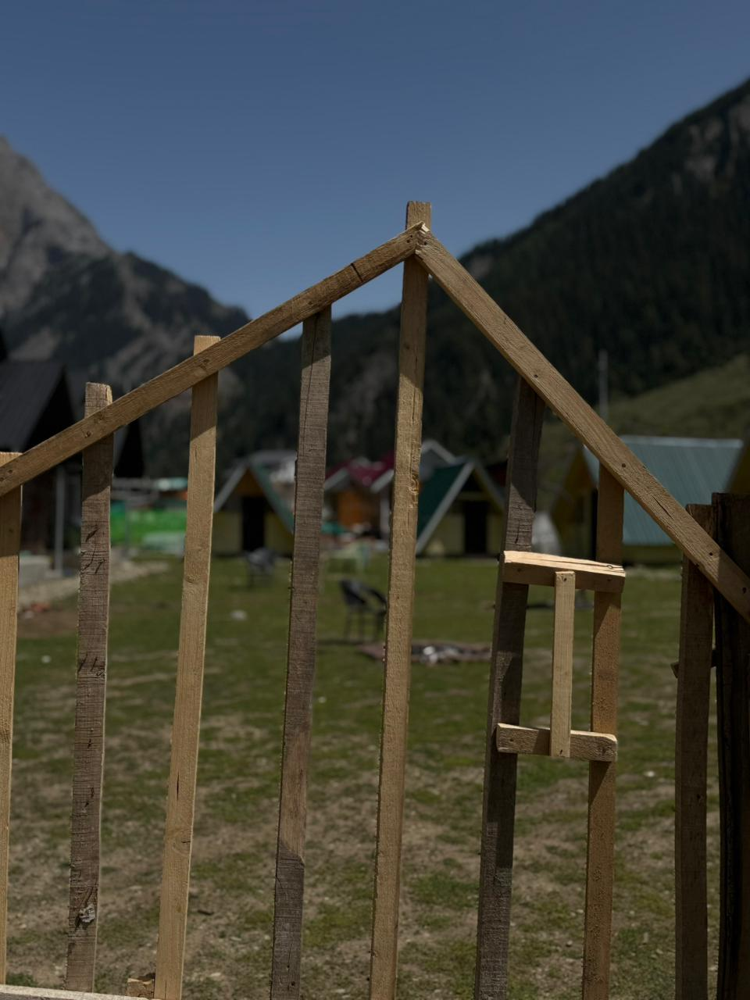
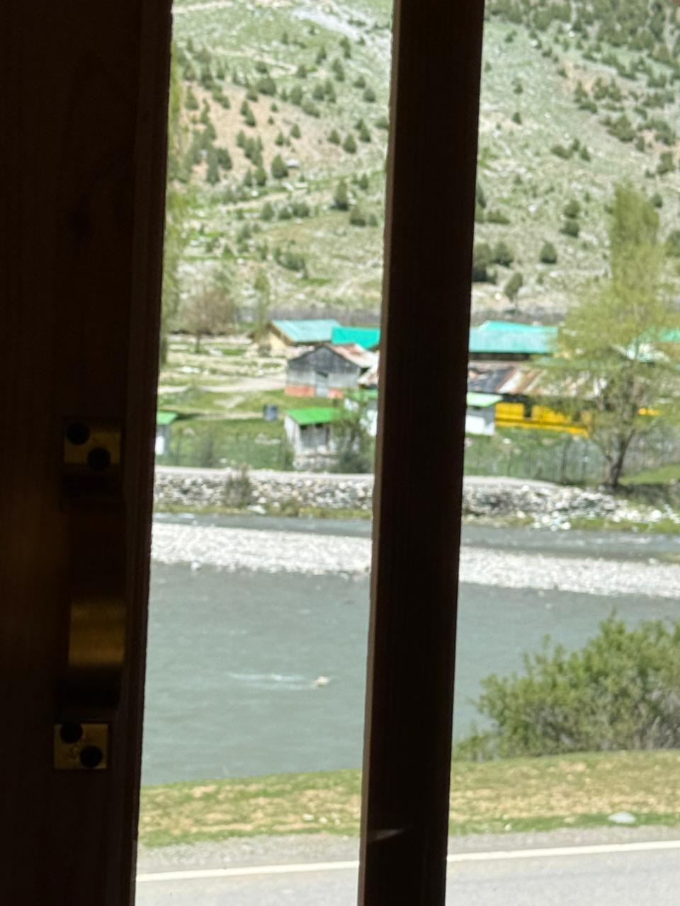

A sanctuary born from love for the Himalayas, the Kishanganga, and the timeless spirit of Kashmiri hospitality.

Dardic Resort Gurez was founded with a singular vision — to create a world-class retreat that honours the raw, untouched magnificence of Gurez Valley while offering every comfort the modern traveller deserves.
Nestled along the legendary Kishanganga River in the remote Markoot area of Gurez, our resort sits at the crossroads of nature, history, and serenity. The Gurez Valley — once a vital stop on the ancient Silk Route connecting Kashmir to Central Asia — carries centuries of stories within its mountains, rivers, and meadows.
We built Dardic Resort because we believe that this extraordinary valley deserves to be experienced — not just by a privileged few, but by every traveller who yearns for genuine peace, authentic culture, and the rare luxury of truly pristine nature.
Get in Touch
Gurez Valley is one of the most breathtakingly beautiful and unspoiled valleys in all of Kashmir. Accessible only through the winding Razdan Pass, it has remained largely untouched by mass tourism — preserving its extraordinary natural purity.
The valley is home to the Dard tribe, an ancient Aryan community whose culture, language, and way of life is a living piece of history. The surrounding landscape — snow-capped peaks, lush alpine meadows, dense pine forests, and the sparkling Kishanganga River — creates a panorama that words can barely capture.
At Dardic Resort, you are not just visiting a place. You are stepping into a world that very few have had the privilege of experiencing — and we are honoured to be your gateway to it.
Everything we do at Dardic Resort is guided by three core pillars that define who we are and how we serve our guests.
We believe the greatest luxury is uninterrupted access to nature's grandeur. Every aspect of our resort — from room placement to outdoor spaces — is designed to keep you as close to the Kishanganga River and the Himalayan landscape as possible.
We are committed to sustainable practices that protect and preserve the pristine environment of Gurez Valley for generations to come.
Kashmiri hospitality is legendary — and at Dardic Resort, it is our greatest asset. We treat every guest as a member of our family, with warmth, attentiveness, and a genuine desire to make your stay extraordinary.
From the moment you arrive to the moment you depart, our team is dedicated to crafting personalised experiences that exceed your expectations.
Nature and luxury are not opposites — at Dardic Resort, they coexist beautifully. Our rooms feature premium bedding, attached washrooms, and all modern amenities, ensuring your comfort never compromises your connection with nature.
We continuously invest in improving our facilities so that every stay surpasses the last.
Gurez offers something rare — a destination where total relaxation and thrilling adventure exist side by side.
Gurez Valley's silence is healing. Here, the only sounds are the Kishanganga River flowing, birds calling across the meadows, and the gentle mountain breeze through the pines.
Sit by the river in the early morning as mist rolls through the valley. Watch the sun set behind Habba Khatoon Peak in a blaze of gold and crimson. Gather by the bonfire as stars fill the unpolluted Gurez sky in their millions.
At Dardic Resort, relaxation is not something you seek — it finds you, the moment you arrive.
For the adventurer, Gurez Valley is a dream destination. Ancient trekking routes through alpine meadows, encounters with rare wildlife, and the constant thrill of exploring one of Kashmir's most remote and spectacular landscapes.
Our resort serves as the perfect base camp for your Gurez adventures. The staff are happy to guide you on local trails, recommend scenic spots, and share the hidden secrets of this extraordinary valley.
At the heart of Dardic Resort is a passionate team of local Kashmiris who live and breathe the beauty of Gurez Valley.
Our management team ensures every aspect of your stay exceeds expectations — from first enquiry to fond farewell.
Our kitchen team prepares authentic Kashmiri and local dishes using fresh, locally sourced ingredients from the valley.
Born and raised in Gurez, our guides know every trail, every peak, and every hidden gem the valley has to offer.